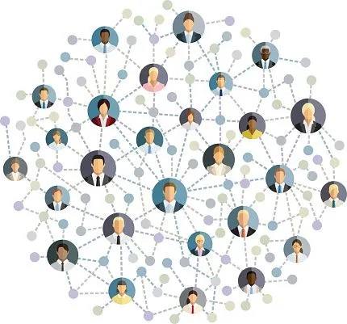
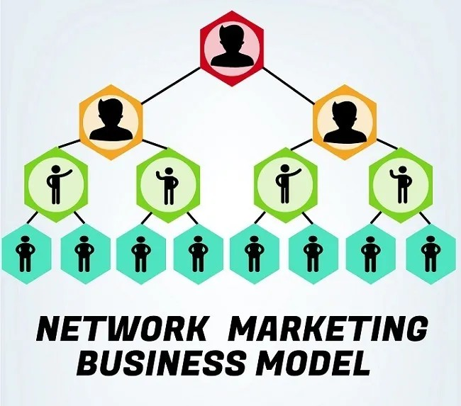

When I was a kid, my parents taught me the same formula for success that you
probably learned: Go to school, study hard, and get good grades so you can get a
secure, high-paying job with benefits—and your job will take care of you.
But that’s Industrial-Age thinking, and we’re not in the Industrial Age
anymore. Your job is not going to take care of you. The government will not take
care of you. It’s a new century, and the rules
have changed.My parents believed in job security, company pensions, Social Security, and
Medicare. These are all worn-out.
Today job security is a joke. We’re in the Information Age now, and we need to use Information Age thinking.
I’m not saying employment is a bad thing. But I am saying, "That is extremely limited." You may or may not have heard of Muhammad Yunus, author of Banker to the Poor, but the Nobel Committee in Oslo, Norway, has heard of him. They gave him the Nobel Peace Prize in 2006 for his concept of microcredit for Third World entrepreneurs - “All people are entrepreneurs,but many don’t have the opportunity to find that out.”
It was 1985 and my wife(Kim), and I were homeless. We were unemployed and
we lived in our car.
After a friend realized our desperate situation, she offered us a room in her
basement. When friends and family were informed of our situation, the first question
was always, “Why don’t you just get a job?” At first we attempted to explain, but we
had a hard time clarifying our reasons. When you’re
talking to someone who values having a job, it is difficult to explain why you might
not want a job.
We occasionally earned a few dollars doing a few odd jobs here and there. Both of us were
college graduates with good job skills and a solid work ethic. But we weren’t going
for job security. We were going for financial freedom.
By 1989, we were millionaires.
I often hear people say, “It takes money to make money.” Our journey from homelessness to being
millionaires in four years, and then on to genuine financial freedom in another five
years, did not take money. We had no money when we started—in fact, we were in
debt—and nobody gave us anything along the way, either.
Then what does it take? It takes a dream, a lot of determination, a willingness to learn quickly.
The passive income, also known as residual
income: income that continues coming in, over and over, long after you finished
expending the effort and capital it took to create the source of the income.
Wealth is not a zero-sum game; it’s not like if you become rich, then you’re taking it away
from me, or Donald Trump or anyone else. This is an astonishing and abundant world we
live in, and there is way more than enough energy, material, ingenuity, creativity, and
ambition to allow every human being on the planet to be wealthy.( Take some time to feel these words )
One business model stood out from the rest. This particular business model creates passive income, but requires relatively
little cash investment to start up. It has very low overhead, and can be operated on
a flexible part-time basis until it generates enough cash flow for the entrepreneur to
transition out of his current full-time job.
That business model is called **network marketing,**
Network marketing has been around in various forms since the middle of the last century. The basic idea is as simple as it is brilliant: Instead of spending tons of money on all sorts of professional agencies and marketing channels to promote products or services, why not pay the people who love them most to just tell others about them? That’s exactly what a network marketing company does: They pay a portion of every sales dollar received back out to their field of independent representatives, who typically are also the products’ most committed and enthusiastic consumers.
As every marketing professional,
Hollywood producer, and corporate giant knows, the single most powerful form
of promotion in the world is personal word-of-mouth. That’s why television
commercials spend millions to hire actors to talk just like your mom, your spouse,
your best friend, or your kids: They are imitating personal word-of-mouth.
Direct selling/network
marketing today does well over $110 billion in annual sales globally, which
makes it an economic bloc roughly the size of New Zealand, Pakistan, or the
Philippines. I often describe this business model with both the terms “direct
selling” and “network marketing” because today, most direct selling companies
employ a network marketing focus.One reason that the total sales from network marketing keeps growing is that
it’s a true win-win.

By harnessing the power of word-of-mouth—person-to-person
relationships—to build a substantial network that represents the company’s line
of products and/or services.
Business being one that has at least
500 employees. In network marketing, you don’t hire employees, you sponsor individuals who are all independent representatives. But the same financial
dynamic applies: You start from yourself -1, you grow to 2, then it grows to 4,then 8,By the time your network of independent representatives grows
to be 300, 400, or 500 strong, you’ve got a serious organization that delivers
significant residual income.

Tom Peters, the legendary management expert describes network marketing as “the first truly
revolutionary shift in marketing since the advent of ‘modern’ marketing at Procter
and Gamble and Harvard Business School over fifty years ago.”
The emerging success of network marketing has been written about in such
journals as Forbes, Fortune, Newsweek, TIME, U.S. News & World Report, USA Today,
The New York Times, and The Wall Street Journal. Fifteen years ago, you couldn’t
have gotten a single one of these journals to give this business the time of day. Now,
look at what a recent issue of Fortune said about network marketing:
Today network marketing is recognized by many experts and accomplished businesspeople
as one of the fastest-growing business models in the world.
Warren Buffett and Richard Branson couldn’t be more different. Buffett drives
a pickup and lives in Omaha; Branson flies his own airline and lives on his own
island in the British Virgin Islands. But they have three things in common. They are
both billionaires. They are both extremely practical men. And they have both owned
network marketing companies.
When people go to hear network marketing presentations, often their main
question is, “If I join this business, how much income can I earn here?”
The reason people want to know how much they can earn per month is
that they are thinking in terms of middle class mindset. They
are thinking about supplementing or replacing their current income.
But that’s not where the real value of network marketing lies.
It's not about earning more income; it's about
owning assets that generate income.
I work really hard to build an
asset, simply because I think like a rich person, not like a working-class person.
Because owning a business is owning an asset, when you build a network
marketing business, you’re not only learning critical life skills, you’re also building
a genuine asset for yourself. In a job, you earn income. In network marketing,
instead of earning income, you build an asset—your business—and the asset
generates income. I only invest in things that make me money. If it makes me money, it’s an asset;
if it takes money from me, it’s a liability.
A job is not an asset. You can’t
sell it on eBay; you can’t rent it out; you can’t take dividends from it. When you work at a job, you are building an
asset—it’s just not your asset.
The biggest popular misconception about network marketing is that it’s a selling
business. But selling is just earning more income. The problem is, if you stop the
activity, the income stops.
Network marketing is not about earning more income;
it’s about building an asset.
Actually, it’s about building eight assets, all at the same time.
Asset #1: A Real-World Business Education
Asset #2: A Profitable Path of Personal Development
Asset #3: A Circle of Friends Who Share Your Dreams and Values
Asset #4: The Power of Your Own Network
Asset #5: A Duplicable, Fully Scalable Business
Asset #6: Incomparable Leadership Skills
Asset #7: A Mechanism for Genuine Wealth Creation
Asset #8: Big Dreams and the Capacity to Live Them
Robert kiyosaki has detailed out how this model is working and serving people and explain the basics on how to join a good network marketing company.Moreover he explained these eight assets in a detailed manner.
If you want to explore more about this particular model,feel free to purchase through my link.
Insights :
There are also people who criticize this model. Yes there are people.. I referred few of the blogs projecting this model in a wrong way. But they are the people who have weak mindset, don't know about the reality " There is no way to become rich in one single day", these people need instant growth and instant money, which is not possible anywhere. First you have to join a good company figure out something to do and learn and develop your skillsets and mindset and then you start making money passively.. That's the idea.. No one will give you instant cash. Remember good things takes time.
A person who has good skill set, communication skill, mindset with little investment, can build his own network which serves as his asset. Even in traditional jobs, you need foundational skills like problem-solving,communication etc. To ensure your job is sustainable and rewarding, continuous skill development is essential. Similarly, the network marketing model requires you to develop the right set of skills to succeed and excel. Initially Robert kiyosaki grew his business following his Rich dad's advice.He once said that if he were to lose all his assets and businesses, he would start over—but now with the help of network marketing model. He too misjudged this model. But after seeing its real-world potential and doing his own research, he penned the book "Business of the 21st Century", which has helped create many millionaires.
Some may or may not understand this network marketing model. But this book has created a lot of millionaires.You can find the proof in the book and also in the internet.
All I can give is to spread this idea and spread awareness of these books. Reading this 5-min blog won’t make you rich. Won’t build you an asset. You have to do it. You can’t build your asset overnight.You can't be rich overnight.
It takes time, effort, skills, and most importantly, determination and courage.
It takes time. Yes, it may take 6 months, 1 year, 2 years, or 5 years. But the asset remains as a passive income source of yours.
Once you finish building your asset, it serves you forever! But it is better than working hard for 8-10 hrs a day for about 40-45 years of your life, building assets for others.
Start learning. I am also a learner, learning each and every day, moving with you people.
Once I shared about the ideas from this book with my father,he said "building assets, developing business will not work out for me because I am a family man. I need to take care of our family, our monthly expenses. I can’t find extra time, efforts and money."
I shared the same idea that I got from books with one of my dearest teachers. He is also repeating the same as my father. From this, I analyzed and find these people have lost critical period of their lifetime (the ages of 16 to 25) without knowing these things.
Remember, this is the phase where you can learn and grow a lot. Once you get married or grow up, you have no time.You have to take care of your family. There will be a lot of responsibilities.
Yes, you can’t find extra time, efforts, and even money to start learning and building assets. If you are at 20’s, this is your most crucial part of your life. So use this time wisely. I don’t suggest you to sit and learn all day. You have to find at least 1 hr a day to learn something new. Read books, research a lot.
I am also learning with you all people. Together we learn and grow.
Try to relate this concept with the table that I released yesterday. I can't cover all the stuff within this single blog. So do it on your own.
If you still don’t understand anything, don’t know how to start or where to start, no worries. I will help you out with the help of books. I personally read books, and only if I feel it creates impact on my life, I share with you friends. I ensure I post only reliable content. Stay curious. Let’s figure out something with the help of books.
Hope you understand my efforts behind this blog and share with your friends.
With a smile,
Monisa Varatharaj
If you really want to know more about this model,feel free to purchase through my link :
Amazon Paperback